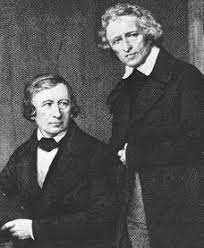
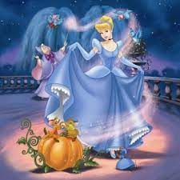

<  Fraţii Grimm (în germană Gebrüder Grimm), Jacob (1785–1863) şi Wilhelm Grimm (1786–1859), au fost folclorişti, lingvişti, filologi, doctori în drept, cunoscuţi în toată lumea pentru colecţia de basme publicată în două volume, care conţine, printre altele, Albă ca zăpada, Croitoraşul cel viteaz, Cenuşăreasa, Scufiţa roşie şi Hansel şi Gretel (primul volum a apărut în 1812, iar al doilea volum în 1814). Poveştile scrise de cei doi fraţi au încântat copilăria multor generaţii, devenind pretexte cuceritoare pentru diverse ecranizări şi dramatizări.[1] Fraţii Grimm şi-au adus contribuţia la formarea limbii germane, în special prin dicţionarul Deutsches Wörterbuch (Cartea cu cuvinte germane) pe care l-au scris împreună şi prin prima carte de fonetică/fonologie a limbii germane, Legea lui Grimm, scrisă doar de Jacob. Dicţionarul Fraţilor Grimm avea 33 de volume şi cântărea 84 kg. Frații Grimm (în germană Gebrüder Grimm), Jacob (1785–1863) și Wilhelm Grimm (1786–1859), au fost folcloriști, lingviști, filologi, doctori în drept, cunoscuți în toată lumea pentru colecția de basme publicată în două volume, care conține, printre altele, Albă ca zăpada, Croitorașul cel viteaz, Cenușăreasa, Scufița roșie și Hansel și Gretel (primul volum a apărut în 1812, iar al doilea volum în 1814). Poveștile scrise de cei doi frați au încântat copilăria multor generații, devenind pretexte cuceritoare pentru diverse ecranizări și dramatizări.[1] Frații Grimm și-au adus contribuția la formarea limbii germane, în special prin dicționarul Deutsches Wörterbuch (Cartea cu cuvinte germane) pe care l-au scris împreună și prin prima carte de fonetică/fonologie a limbii germane, Legea lui Grimm, scrisă doar de Jacob. Dicționarul Fraților Grimm avea 33 de volume și cântărea 84 kg. La 20 decembrie 1812 Frații Grimm au publicat primul volum din colecția de basme Kinder- und Hausmärchen („Povești pentru copii și familie”), conținând 86 de povești[3]; al doilea volum, conținând alte 70 de povești, a apărut în 1814.[4] Apariția romantismului în secolul al 19-lea a reîmprospătat interesul pentru poveștile din folclor și a reprezentat o formă pură de literatură și cultură națională pentru cei doi frați. Cu scopul de a întocmi un tratat academic asupra basmelor populare, frații au stabilit o metodologie pentru culegerea și înregistrarea acestora, metodologie care a devenit baza studiilor folclorice. Prima lor culegere a fost revizuită și publicată de mai multe ori între anii 1812 și 1857, crescând de la 86 de povești până la mai mult de 200. Pe lângă scrierea și adaptarea basmelor, frații au scris culegeri respectate de mitologie germană și scandinavă iar în 1808 au început să lucreze la un dicționar german de referință (Deutsches Wörterbuch – Cartea cu cuvinte germane – 33 de volume cântărind 84 kg), care, însă, a rămas neterminat până la sfârșitul vieților lor. Jacob Grimm a publicat prima carte de fonetică/fonologie a limbii germane - Legea lui Grimm. Popularitatea poveștilor culese de frații Grimm a rămas intensă mult timp după dispariția lor fizică. Acestea pot fi citite în mai mult de 100 de traduceri și au fost adaptate de cineaști precum Lotte Reiniger, și Walt Disney, cu filmele „Albă ca zăpada și cei șapte pitici” ("Snow White and the Seven Dwarfs") și „Frumoasa din padurea adormită” ("Sleeping Beauty"), printre altele. Spre mijlocul secolului XX poveștile au fost folosite în scopuri propagandiste de către cel de-al Treilea Reich. Mai târziu, în același secol, psihologi precum Bruno Bettelheim au reafirmat valoarea basmelor fraților Grimm, în ciuda cruzimii și violenței din versiunile originale ale unora dintre basme (ce au fost de atunci adaptate în acest sens).
 A fost odată un om văduv, care s-a căsătorit pentru a doua oară cu o femeie mândră şi răutăcioasă. Ea avea două fiice, care la rândul lor erau încrezute. - Prima sa soţie a avut o fiică frumoasă, care era o fată de o bunătate extraordinară şi cu o fire blândă. Împreună cu fiicele ei, mama vitregă o punea la toate treburile casnice. - Seara, când fata îşi termina treburile, se culca lângă foc. Din această cauză, era totdeauna murdară de cenușă, de unde şi porecla de Cenuşăreasa. Biata fată nu îndrăznea să îi spună tatălui ei ceea ce îndura. - Într-o zi, prinţul a invitat toate domnișoarele din ţinut la un bal pentru a-şi putea alege o soţie. Cele două surori vitrege au început vesele să îşi pregătească garderoba în timp ce biata Cenuşăreasa le privea cu drag. Însă ele o tachinau spunându-i că o servitoare nu ar putea participa niciodată la un bal. - După ce surorile ei au plecat, ea a izbucnit în plâns sub alunul de la mormântul mamei sale. Atunci şi-a făcut apariţia în alun o porumbiță albă, care i-a promis că o va ajuta să participe la bal. Apoi i-a dat o rochie frumoasă și o delicată pereche de pantofi. Porumbița i-a spus să se întoarcă înainte de miezul nopţii, deoarece după ora douăsprezece vraja se va rupe. - La bal, cu toții au fost fascinați de această domnișoară, în special prinţul care a dansat tot timpul cu ea. Nici surorile vitrege nu au recunoscut-o. - Înainte de miezul nopţii şi-a adus aminte să plece. Întoarsă acasă, ea i-a mulţumit porumbiței, apoi şi-a salutat surorile care nu se opreau din a vorbi despre frumoasa fată de la bal pe care nu o cunoştea nimeni. - Cu ajutorul porumbiței ea a participat la bal şi în seara următoare, fermecându-l pe prinț chiar mai mult. Și de această dată ea a plecat doar la ultima bătaie a ceasului care anunţa miezul nopţii. - A treia noapte s-a petrecut la fel, dar în graba ei şi-a pierdut un pantof coborând pe treptele palatului. Prinţul a urmărit-o, dar nu a mai putut-o prinde, însă, în urma ei a găsit pantoful pierdut şi a promis că o va găsi pe fata căreia îi aparţine şi o va lua de soţie. - Prinţul a încercat pantoful pe toate fetele din ţinut. Surorile vitrege au încercat în zadar și ele, dar în ciuda batjocoririlor pe care i le adresau Cenușăresei, acesteia i s-a potrivit perfect pantoful. Apoi s-a încălţat şi cu celălalt pantof pentru a risipi orice urmă de îndoială că aceștia nu i-ar aparține. La vederea acestui lucru mama și surorile vitrege au încremenit de invidie. -Prințul a luat-o pe Cenușăreasa pe cal și au pornit către palat, unde au făcut o nuntă mare, petrecând trei zile și trei nopți.